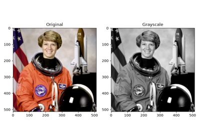
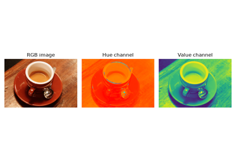
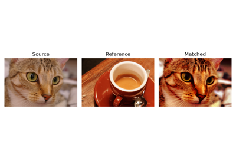
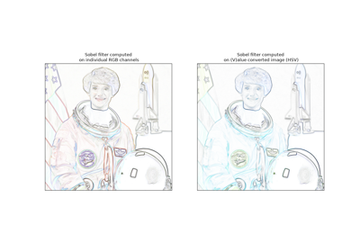
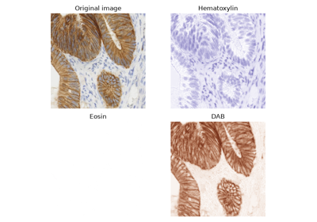

Manipulating exposure and color channels#  RGB to grayscale RGB to grayscale  RGB to HSV RGB to HSV  Histogram matching Histogram matching  Adapting gray-scale filters to RGB images Adapting gray-scale filters to RGB images Filtering regional maxima Filtering regional maxima  Separate colors in immunohistochemical staining Separate colors in immunohistochemical staining Gamma and log contrast adjustment Gamma and log contrast adjustment Histogram Equalization Histogram Equalization Tinting gray-scale images Tinting gray-scale images Local Histogram Equalization Local Histogram Equalization 3D adaptive histogram equalization 3D adaptive histogram equalization